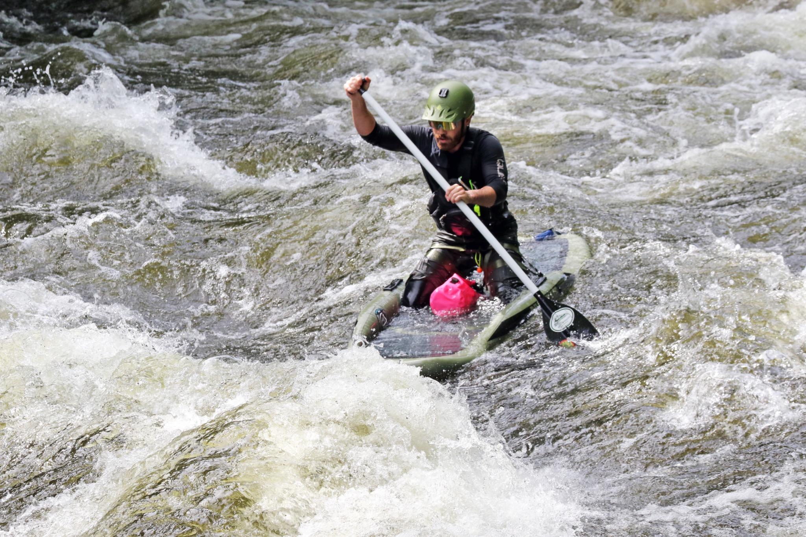
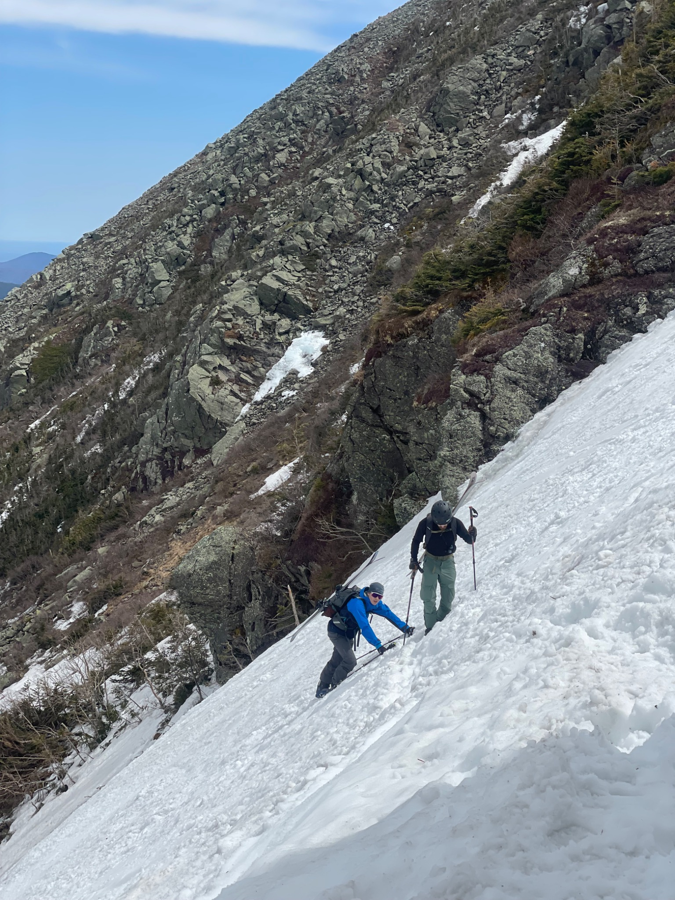
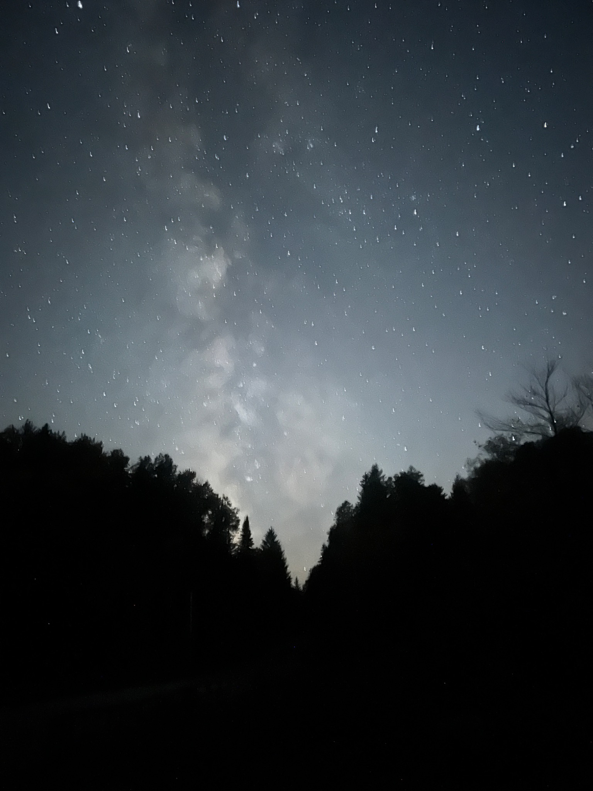
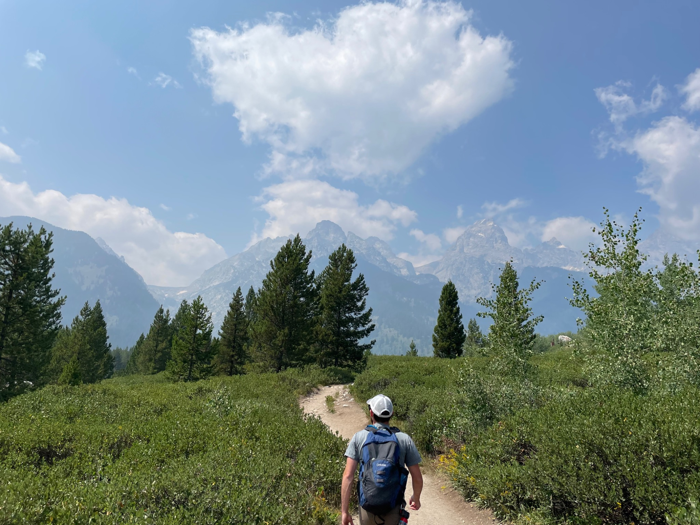

GO FAR ENOUGHTO BRING SOMETHINGBACK WITH YOU.
END OF THE ROLL
The photographs belong to the stories.
Some eventually become Journal entries. Some stay as moments. Either way, they were made outside.
Continue into the Journal →